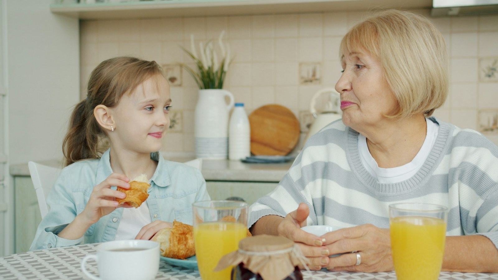

Why an app
The feature most agencies cannot match.
Most families find out how a visit went by phoning their mom and hoping she remembers. Our app shows it as it happens: who arrived, when, what they ate, how they seemed and anything that worried the caregiver.
It works on a phone first, in large type, and is built to be used by a 75-year-old sibling as easily as a 40-year-old.
- Maria arrived · GPS check-in
- Breakfast eaten, all of it
- Fluids: 2 glasses of water
- Walk in the garden, 20 minutes
- Lunch eaten
- Mood: calm · listened to Sinatra
- Photo shared with the family circle
- Afternoon routine started early, as planned
Scroll the tour
See care happen, from anywhere.
Care note · 11:20 am
Talked about his years at the shipyard. Laughed at the old photos. No concerns today.
Mood trend · 2 weeks
Photos


Shared only when Dad and the family have agreed.
Family circle
Demo family · sample data
1 of 5
Visit status
See who is with them, when they arrived and who the backup caregiver is. If a visit is late, you hear about it before you notice.
2 of 5
Care notes
A short structured note every visit: mood, meals, fluids, sleep, activity, bathroom and any concern. A weekly digest and a PDF for the doctor.
3 of 5
Trends
Charts over weeks so you see change early. A gentle flag prompts a call from the care manager, never a diagnosis.
4 of 5
Photos
Moments from a good day, shared only with consent.
5 of 5
Messages and family circle
Brothers, sisters and grandchildren in one thread with the care team, each with their own permissions.
 An older woman smiling at her smartphone
An older woman smiling at her smartphoneLive visit tracking
- GPS check-in and check-out with times
- A status line: 'Maria is with Dad now'
- An alert if a caregiver is late or a visit is missed, with the backup caregiver's name
- A calendar of every visit, past and future
A cup of tea and a book on a table





Daily care notes
- Quick structured entries each visit: mood, meals, fluids, sleep, activities, bathroom and any concern
- Optional photos when your family and the client have agreed
- A weekly digest by email
- A downloadable PDF to take to the doctor
Trends and insight
See change early, not after a crisis.
Charts over weeks for mood, meals, hydration and sleep. A gentle flag when a pattern changes prompts a call from the care manager. It is never a diagnosis.
Demo: mood and hydration scores over 8 weeks (sample data)
Fictional demo data. Real charts use your family's care notes.
Family circle
Everyone in the loop, each with the right access.
| Role | Can see visits and notes | Can message the team | Can approve plan changes | Sees billing |
|---|---|---|---|---|
| Primary contact | Yes | Yes | Yes | Yes |
| Family member | Yes | Yes | No | No |
| View only (for example a grandchild) | Yes | No | No | No |
| Caregiver | Their own visits | Yes, with the care manager | No | No |
| Care manager | Yes | Yes | Proposes changes | Yes |
A shared message thread with the care team and the care manager, with response targets, and a one-tap video call link.

 An older couple reviewing paperwork at home
An older couple reviewing paperwork at homeCare plan and schedule
- The care plan, visible and editable with approval
- The weekly schedule with change requests
- Medication reminders and confirmations, where our licence and scope allow
- Change hours with a few days' notice
An older woman reaching for a light switch at homeSafety
- Optional partner integrations for door sensors, fall detection and wearables
- An emergency button that alerts the care manager and the family circle
- Incident reports within a stated time: what happened and what changed
 Hands holding a smartphone
Hands holding a smartphoneBilling and ratings
- Live hours and invoices
- Pay by card or bank transfer
- A one-tap rating after each visit that feeds our public promises dashboard
- Long-term care insurance claim support: invoices formatted for your insurer
Privacy
Who can see what, and what we never do.
| Information | Who can see it |
|---|---|
| Visit times and GPS check-in | Family circle, care team |
| Care notes | Family circle members with note access, care team |
| Photos | Only people the client and primary contact have approved |
| Billing | Primary contact and anyone they add |
| Health details | Never sent to advertising or analytics tools |
- We do not sell your data, ever
- Data is encrypted in transit and at rest
- Role-based access with audit logs of who viewed what
- You can download or delete your family's data when care ends

Home is where they know where everything is.
Familiar rooms, familiar faces, one steady team.


Next step
See the app with your own family.
Book a free assessment and we will set up the family circle on day one. Questions? Call (813) 555-0142.